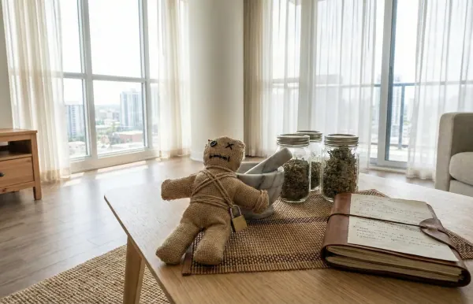
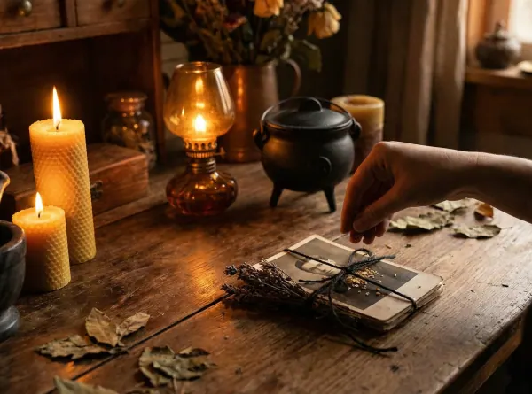
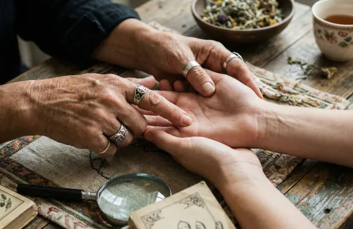
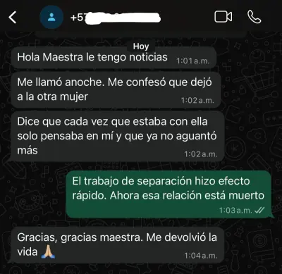
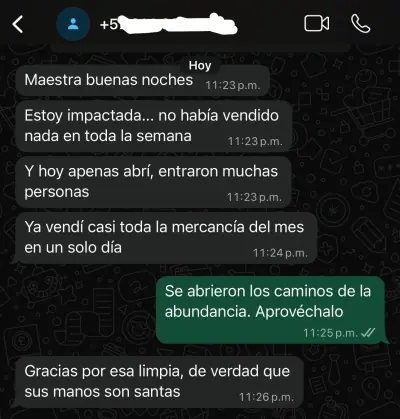

Amarres de Parejas
Consulta espiritual para hablar sobre tu relación, tus sentimientos y las posibilidades de fortalecer el vínculo.
✦ Consultar este Amarre →Consultas espirituales a distancia para hablar sobre el amor, las relaciones, la armonía y la prosperidad. Atención privada por WhatsApp para personas en todo México.
Consultas y prácticas de tradición espiritual para personas en todo México, con atención a distancia.
Consulta espiritual para hablar sobre tu relación, tus sentimientos y las posibilidades de fortalecer el vínculo.
✦ Consultar este Amarre →Un espacio de orientación para conversar sobre la cercanía, la comunicación y la conexión íntima en pareja.
✦ Avivar la Pasión →Consultas espirituales discretas y respetuosas para parejas del mismo sexo, sin prejuicios.
✦ Consultar Unión →
Orientación espiritual para quienes desean recuperar la calma, mejorar el diálogo y cultivar la comprensión en su relación.
✦ Pedir Endulzamiento →Consulta sobre prácticas tradicionales de limpieza espiritual para quienes buscan tranquilidad y bienestar.
✦ Purificar mi Energía →Orientación espiritual para reflexionar sobre tus metas, oportunidades y deseos de prosperidad.
✦ Atraer Fortuna →Consulta espiritual para acompañar nuevos proyectos, metas laborales y decisiones personales.
✦ Abrir Mis Caminos →Prácticas tradicionales de protección espiritual para quienes buscan tranquilidad para sí mismos, su familia y su hogar.
✦ Blindar mi Energía →
Consulta espiritual para hablar sobre situaciones difíciles en pareja y preocupaciones relacionadas con terceras personas.
✦ Alejar Intrusos →Orientación espiritual para quienes desean reflexionar sobre una posible reconciliación y los pasos a seguir.
✦ Retornar a mi Pareja →Prácticas de tradición ancestral y orientación espiritual para conversar sobre situaciones personales complejas, también a distancia en México.
✦ Consultar Caso Difícil →
Lectura simbólica de cartas para reflexionar sobre tus relaciones, inquietudes y decisiones personales.
✦ Agendar Lectura →Un espacio para conocer experiencias compartidas por personas que han recurrido a consultas espirituales.
Audios compartidos por WhatsApp sobre experiencias personales de consulta. La publicación de estos materiales debe contar con autorización y respetar la privacidad de quienes participan.
«Maestra Sol, quería contarle que... después de todo lo que vivimos, mi esposo y yo estamos mucho mejor. Poco a poco hemos vuelto a encontrar la tranquilidad y el cariño que nos hacía falta. Estoy muy contenta... y quería darle las gracias por haberme ayudado cuando más lo necesitaba.»
«Maestra Sol... de verdad, muchas gracias por todo lo que hizo por mí. Mi esposa regresó... y ahora estamos muy felices juntos. Siempre voy a estar agradecido, de todo corazón.»


Si buscas orientación espiritual sobre una situación personal, puedes escribirme directamente por WhatsApp. La consulta es a distancia y se atiende de manera privada, sin intermediarios.